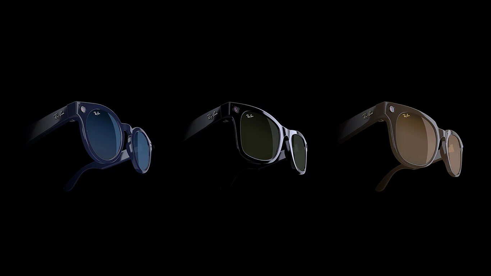

Meta voice and Ray-Ban Stories
I produced the voice recordings that trained Meta's AI voices, heard across Facebook, Instagram, Oculus and Portal, and the embedded voice in the Ray-Ban Stories glasses.
AudioCreative productionProgram delivery
4surfaces: Facebook, Instagram, Oculus, Portal
18%fewer voice production errors
~10%productivity gain from a tool I built
11countries on the team
The problem
- Meta's AI speech platform needed new voice recordings for every product surface.
- Ray-Ban Stories had a hard, public launch date, and its embedded voice had to work every time.
- Voice capture ran through vendors in Europe, for a team spread across eleven countries.
What I did
- Led audio production for the AI speech platform: casting, sessions, direction and delivery.
- Managed offshore voice capture through third-party vendors in Europe.
- Supported the embedded voice systems on the glasses and ran final QA.
- Sat between audio creatives and backend developers, and ran the team in Scrum.
- Built and scripted an internal project-management tool that put every voice build in one place.
What changed
- The Ray-Ban Stories voice shipped on the launch date.
- Voice production errors down 18%.
- Team productivity up about 10%.
- One workflow for every voice product, from Oculus to Portal.
